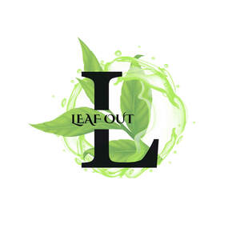

Trade Mark Journal No.2025/037 12 September 2025
UK00004257625 1 September 2025 (30)

- Class 30
- Tea; Oolong tea [Chinese tea]; Oolong tea; Rooibos tea; Chai tea; Chamomile tea; Tieguanyin tea; Darjeeling tea; Herbal tea; Peppermint tea; Black tea [English tea]; Ginseng tea; Ginger tea; Jasmine tea; Green tea; Tea for infusions; Tea bags; Instant Oolong tea; Rosemary tea; Barley tea; Tea leaves; Tea extracts; Flavourings of tea; Sage tea; Lapsang souchong tea; White tea; Lime tea; Black tea; Teas; Tea essences; Linden tea; Yellow tea; Herb tea [infusions]; Mate [tea]; Barley-leaf tea; Instant tea; Red ginseng tea; Tea substitutes; Tea mixtures; Tea (Non-medicated -); Ginseng tea [insamcha]; Herbal tea [other than for medicinal use]; Japanese green tea; Instant green tea; Non-medicinal herbal tea; Theine-free tea; Tisanes made of tea (Non-medicated -); Herbal teas; Iced tea mix powders; Packaged tea [other than for medicinal use]; Apple flavoured tea [other than for medicinal use]; Chrysanthemum tea (Gukhwacha); Fruit flavoured tea [other than medicinal]; Tea bags (Non-medicated -); Jasmine tea bags, other than for medicinal purposes; Lime blossom tea; Instant white tea; Orange flavoured tea [other than for medicinal use]; Fruit teas; Instant black tea; Jasmine tea, other than for medicinal purposes; Tea extracts (Non-medicated -); Rose hip tea; Yuja-cha (Korean honey citron tea); Flavourings of tea for food or beverages; Coffee, teas and cocoa and substitutes therefor; Mugi-cha [roasted barley tea]; Herbal teas [infusions]; Earl grey tea; Earl Grey tea; Tea essences (Non-medicated -); Theine-free tea sweetened with sweeteners.
Milites Ltd